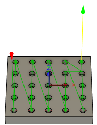

<div id="probe_order_method"><p>選択した穴またはボスのプローブ順序を指定します。例:</p>

<table class="tipTable" cellspacing="10">
<tr>
<td><center></center></td>
<td><center></center></td>
<td><center></center></td>
</tr><tr>
<td><center><p><b>選択した順序</b></p></center></td>
<td><center><p><b>順序最適化</b></p></center></td>
<td><center><p><b>内側から外側</b></p></center></td>
</tr></table>

<table class="tipTable" cellspacing="10">
<tr>
<td><center></center></td>
<td><center></center></td>
</tr><tr>
<td><center><p><b>X 順</b></p></center></td>
<td><center><p><b>Y 順</b></p></center></td>
</tr></table>
<ul>
<li><b>選択した順序</b>: 選択された順序で穴またはボスをプローブします。</li>
<li><b>順序最適化</b>: 最も効率的な順序で穴またはボスをプローブします。</li>
<li><b>内側から外側</b>: 中心から外側に向かって穴またはボスをプローブします。</li>
<li><b>X 順</b>: X 軸方向に穴またはボスをプローブします。</li>
<li><b>Y 順</b>: Y 軸方向に穴またはボスをプローブします。</li>
</ul>
</div>